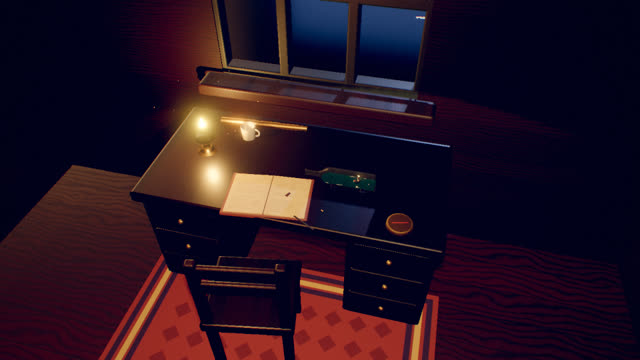
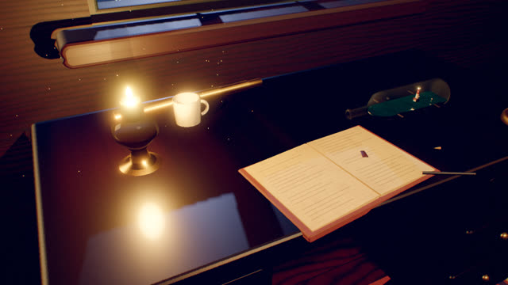
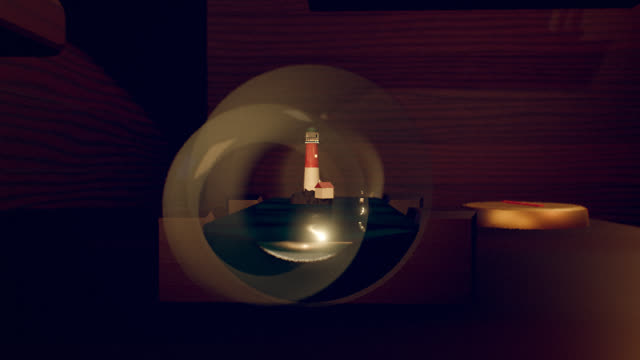
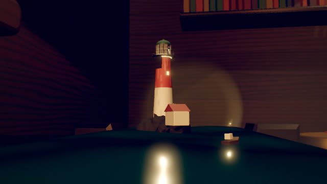
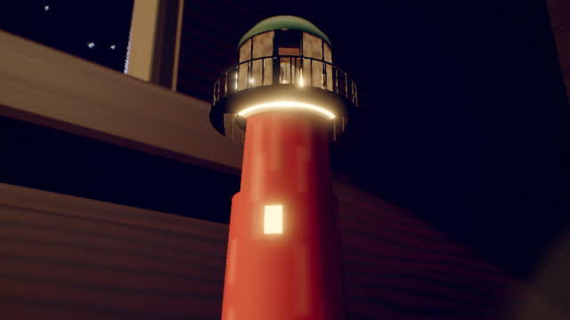
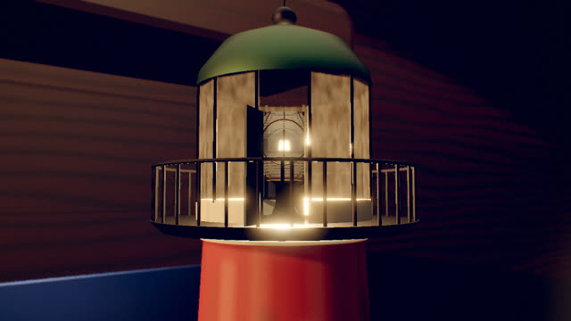
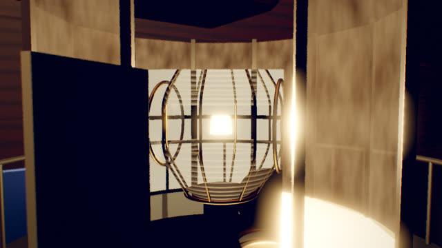
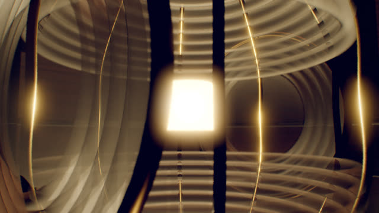
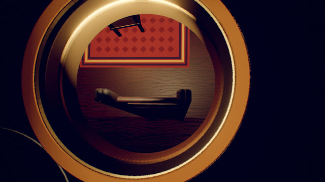

작업 흐름
- 입력
- 주제 하나 (병, 스노볼, 그림, 시계, 책, 인형의 집 …)
- 브리프
- 세계의 고리: 세계마다 단위 · 빛 · 움직임 · 다음 세계로 가는 포털, 마지막 세계가 첫 방을 품는 길
- 세계와 포털
- make.js로 세계마다 모델링 · 재질 · 조명, 담는 포털(병 · 유리관)이나 여는 포털(창 · 문 · 해치), 세계가 차지하는 상자
- 카메라와 검사
- 세계마다 키 3–6개, 체감 거리로 자동 타이밍; check.mjs가 루프 닫힘 · 이음매 · 속도 · 밝기 검사, 스틸 시트로 검토
- 출력
- 라이브 HTML 페이지와 1920×1080 MP4 루프
node nested-world-loop/scripts/new-loop.mjs my-loop --title "제목"
node nested-world-loop/scripts/check.mjs my-loop
node nested-world-loop/scripts/render.mjs my-loop --sheet 12
node nested-world-loop/scripts/render.mjs my-loop --seams
node nested-world-loop/scripts/render.mjs my-loop # → out/my-loop.mp4요구 사항: Node + Playwright Chromium (GPU 없이 SwiftShader), ffmpeg. 단계별 순서는 SKILL.md에 있습니다.
샘플
예제와 스타터의 한 순간들입니다. 영상은 이 순서대로 끊기지 않고 이어져 첫 장면으로 돌아옵니다. 카드를 누르면 라이브 페이지가 그 순간에 멈춘 채 열립니다(클릭 · 스페이스로 재생).
병 속의 등대 관리인 방 → 병 속 바다 → 등명실 → 관리인 방 · 24초
새 주제로 만든 예제입니다. 책상 위 마개 빠진 병 속으로 들어가 등대에 오르고, 등명실 바닥의 해치로 내려가면 처음의 방 천장입니다.

관리인 방 · 0초해치 아래루프의 첫 장면이자 마지막 장면

관리인 방 · 2초램프 곁으로방의 키 라이트, 불꽃이 흔들림

이음매 · 6초병 속으로1 m = 0.25 cm의 세계로 넘어가는 순간

병 속 바다 · 8초병 속의 등대유리 너머로 거대한 방이 보임

병 속 바다 · 10.5초탑을 따라램프 쪽에서 오는 따뜻한 빛

병 속 바다 · 12초열린 문문 안쪽만 실제 크기 등명실로 이어짐

이음매 · 14.5초문턱미터 세계에서 센티미터 세계로

등명실 · 16.5초렌즈병 속 빔과 같은 각도로 돎

이음매 · 22.3초해치 아래로처음의 방으로 돌아가는 길
액자 속 오두막 스타터 · 서재 → 그림 속 언덕 → 서재 · 14초
가장 작은 고리입니다. 그림의 캔버스와 오두막 창, 두 개의 여는 포털만 씁니다.
실제 작품
이 레포에서 만든 스킬입니다. CF长风이 X에 공유한 Rez의 20초 영상이 출발점입니다. 시계공의 작업대에서 시계 무브먼트 속 도시로, 상점 창을 지나 다시 작업대로 돌아오는 영상을 three.js만으로, 외부 에셋 없이 만들었습니다. 이 스킬은 그 형식(끊기지 않는 한 번의 카메라 이동, 세계 속의 세계, 코드로 만든 세계마다의 빛)만 가져왔고, 시계 · 도시 · 상점은 다시 만들지 않았습니다. 예제와 스타터는 모두 새 주제입니다.
「병 속의 등대」 · 24초 루프세계 3개, 한 바퀴에 1/400, 세 이음매 모두 검사 통과nested-world-loop/demo/lighthouse-bottle/
예제 폴더 · examples/lighthouse-bottleloop.js와 스틸 검토가 담긴 BRIEF.mdgithub.com/jungrok5/motion-skills
원본 · X 게시물CF长风 · 「시계 문자판 속 미시 세계」 무한 루프, 순수 three.js, 외부 3D 에셋 없음x.com/cfenghub/status/2125403596757905720
원본 영상 · Rez「a world within a watch」 · 20초 · three.js, no external assetsx.com/RezAIT00/status/2125285225769164985
링크
- SKILL.md 워크플로
- 폴더 lib · scripts · references · starter · examples
- README.md 빠른 시작
- references/PORTALS.md 포털의 종류, 상자, 이음매의 함정, 고리를 닫는 패턴
- references/BRIEF.md 브리프 양식과 스틸 검토 기준
- references/LOOK.md 빛 · 재질 · 렌즈 · 움직임
- references/SOURCE.md 원본에서 가져온 것과 가져오지 않은 것
- references/LESSONS.md 겪은 문제와 해결